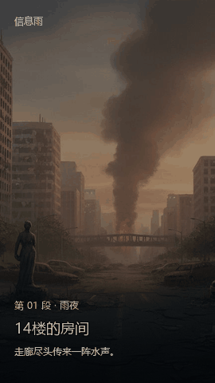
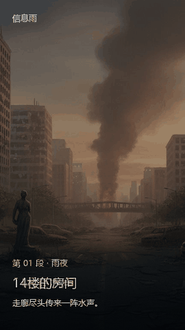
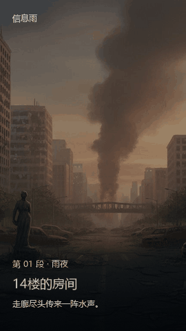

01轻微落位
当前点击切换的参考基线：旧内容淡出，新文字轻轻落位。

每个动画都会自动循环播放，无需拖动、触摸或点击。请比较“画面怎么移动”以及“下一段如何出现”，再决定要把哪种方向带进产品。
当前点击切换的参考基线：旧内容淡出，新文字轻轻落位。

当前画面向侧边倾斜离场，下一张画面从后方显露。

新场景从下方推入，阅读舞台整体移动，方向清楚直接。
图片与文字分层移动，保留空间感，同时让文字更稳定。

场景少移动，以柔和光感和短暂方向文字回应动作。
这些是基于现有作品封面和阅读界面制作的视觉示意，不代表已经选定方案，也不改变当前 Demo。手机和电脑打开后都会直接播放。